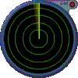

These are some of the tools I use to design and produce my work.I listed the programs I know beyond the basics. I have worked with the Mac OS for well over a decade and have a home studio featuring a PowerComputing "Clone". I used to work on-site as well. However, I'm now employed at Neuberger&Berman developing their Intranet. There, I work in a Windows NT environment. But that's another story... Let's just say BOTH platforms have advantages and disadvantages. Kill me but I appreciate both.